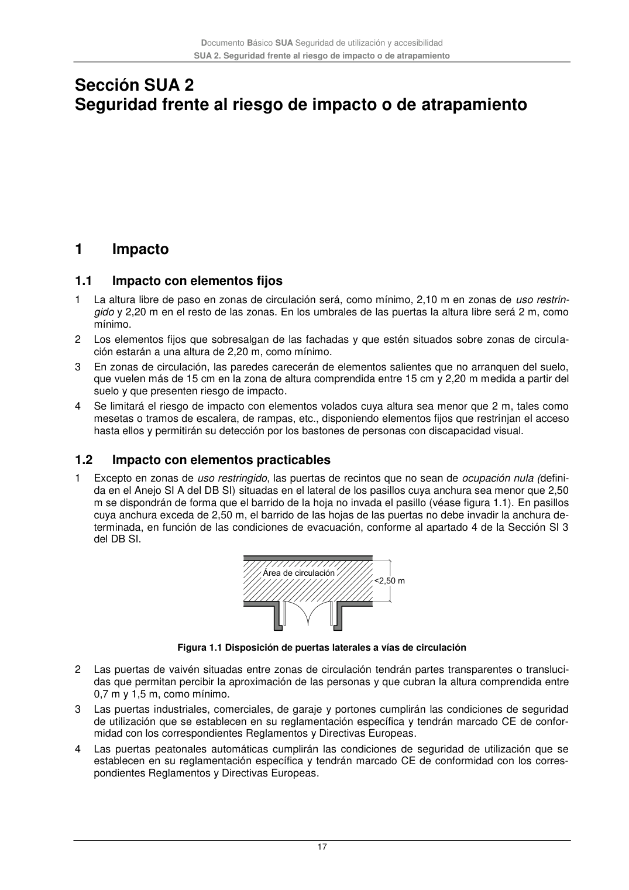

DB-SUA Seguridad de utilización y accesibilidad · edición 2022-06-14 · capa oficial
Documento DB-SUA-oficial · SHA-256 del PDF 3cfb5bbb135e8f02faebd8b844e03e8947994c18d4c9e675a7d2aa37d1cd5958
Copia fiel del PDF fuente · Fuente oficial
Ficha de la disposición en la fuente oficial
Formatos: JSON del segmento · Markdown
Impacto con elementos fijos 1 La altura libre de paso en zonas de circulación será, como mínimo, 2,10 m en zonas de uso restrin- gido y 2,20 m en el resto de las zonas. En los umbrales de las puertas la altura libre será 2 m, como mínimo. 2 Los elementos fijos que sobresalgan de las fachadas y que estén situados sobre zonas de circula- ción estarán a una altura de 2,20 m, como mínimo. 3 En zonas de circulación, las paredes carecerán de elementos salientes que no arranquen del suelo, que vuelen más de 15 cm en la zona de altura comprendida entre 15 cm y 2,20 m medida a partir del suelo y que presenten riesgo de impacto. 4 Se limitará el riesgo de impacto con elementos volados cuya altura sea menor que 2 m, tales como mesetas o tramos de escalera, de rampas, etc., disponiendo elementos fijos que restrinjan el acceso hasta ellos y permitirán su detección por los bastones de personas con discapacidad visual. 1.2
